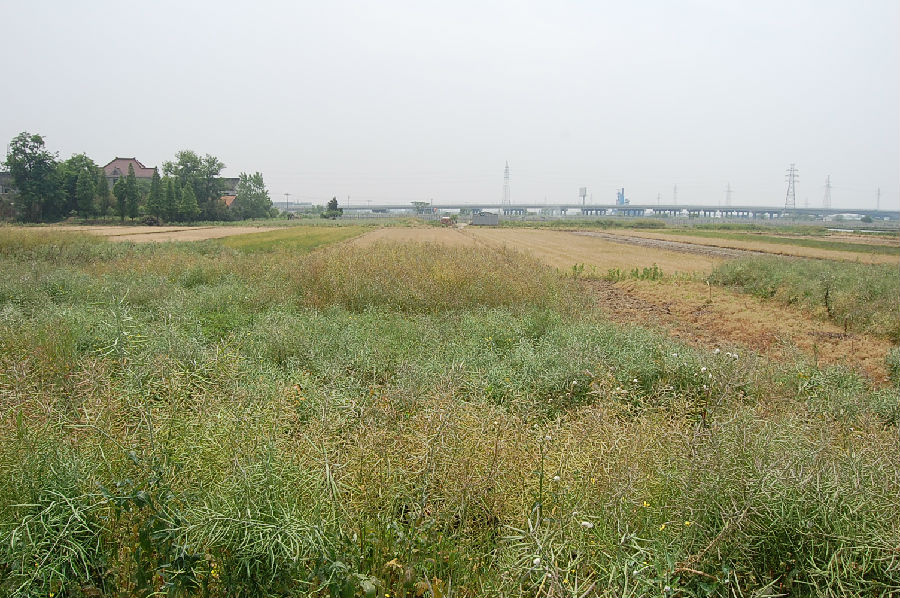

嘉兴市文物保护网 · 市级文物保护点 · 2020-11-02 · 原文

三水湾遗址位于嘉兴市秀洲区油车港镇上睦村（原三水湾村），南临申嘉湖高速公路，西临京杭大运河，北有乡村公路，面积约20000平方米。该遗址是1986年开挖河道和鱼塘时，当地村民张大有发现陶罐等器物并送交嘉兴博物馆。遗址未发掘，已遭破坏，可见文化层厚约0.2米。以往的文物调查中曾采集到泥质灰陶罐、鼎、盆、砺石等标本，根据这些器物判断该遗址属新石器时代良渚文化。虽由于条件所限没有试掘，但其资料记录明确，有待进一步研究确认，因而具有一定的历史价值。1995年公布为嘉兴市文物保护点。